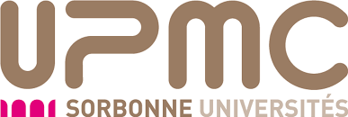
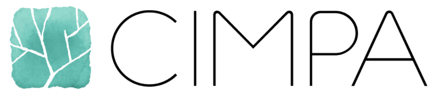

<!DOCTYPE html>
<html lang="en">

<head>
    
    <meta charset="utf-8">
    <meta http-equiv="X-UA-Compatible" content="IE=edge">
    <meta name="viewport" content="width=device-width, initial-scale=1">
    <meta name="description" content="Séminaire Parisien des Mathématiques de l'Imagerie">


    <title>Imaging and machine learning - Séminaire Parisien des Mathématiques de l'Imagerie</title>

    <link rel="canonical" href="http://localhost:4000/semester2019/workshop3/">

    <!-- Favicon -->
    <link rel="icon" type="image/png" href="/img/favicon.png">

    <!-- Bootstrap Core CSS -->
    <link rel="stylesheet" href="/css/bootstrap.min.css">

    <!-- Custom CSS -->
    <link rel="stylesheet" href="/css/clean-blog.css">

    <!-- Custom Fonts -->
    <link href="http://maxcdn.bootstrapcdn.com/font-awesome/4.1.0/css/font-awesome.min.css" rel="stylesheet" type="text/css">
    <link href='http://fonts.googleapis.com/css?family=Lora:400,700,400italic,700italic' rel='stylesheet' type='text/css'>
    <link href='http://fonts.googleapis.com/css?family=Open+Sans:300italic,400italic,600italic,700italic,800italic,400,300,600,700,800' rel='stylesheet' type='text/css'>

    <script src="/js/jquery.min.js "></script>

    <link type="application/atom+xml" rel="alternate" href="http://localhost:4000/feed.xml" title="Séminaire Parisien des Mathématiques de l'Imagerie" />

    <!-- HTML5 Shim and Respond.js IE8 support of HTML5 elements and media queries -->
    <!-- WARNING: Respond.js doesn't work if you view the page via file:// -->
    <!--[if lt IE 9]>
        <script src="https://oss.maxcdn.com/libs/html5shiv/3.7.0/html5shiv.js"></script>
        <script src="https://oss.maxcdn.com/libs/respond.js/1.4.2/respond.min.js"></script>
    <![endif]-->

        <!-- Loading mathjax -->
        <script type="text/javascript" src="https://cdn.mathjax.org/mathjax/latest/MathJax.js?config=TeX-AMS_HTML"></script>

</head>


<body>

    <!-- Navigation -->
<nav class="navbar navbar-default navbar-custom navbar-fixed-top">
    <div class="container-fluid">
        <!-- Brand and toggle get grouped for better mobile display -->
        <div class="navbar-header page-scroll">
            <button type="button" class="navbar-toggle" data-toggle="collapse" data-target="#bs-example-navbar-collapse-1">
                <span class="sr-only">Toggle navigation</span>
                <span class="icon-bar"></span>
                <span class="icon-bar"></span>
                <span class="icon-bar"></span>
            </button>
            <a class="navbar-brand" href="/">Home</a>
        </div>

        <!-- Collect the nav links, forms, and other content for toggling -->
        <div class="collapse navbar-collapse" id="bs-example-navbar-collapse-1">
            <ul class="nav navbar-nav navbar-right">


                  <!--<li>
                    <a href="/next">Prochains</a>
                </li>
                <li>
                    <a href="/past">Passés</a>
                </li>  -->

                  <li>
                        <a href="/seminar/">Seminar</a>
                  </li>
                  <li>
                        <a href="/coming">Coming</a>
                  </li>

                <!--

                
                <li>
                    <a href="/coming/">Coming</a>
                </li>
                
                <li>
                    <a href="/index-old/">Imaging in Paris</a>
                </li>
                
                <li>
                    <a href="/seminar/">Imaging in Paris Seminar</a>
                </li>
                
                <li>
                    <a href="/">The Mathematics of Imaging</a>
                </li>
                
                <li>
                    <a href="/seminar/next/">Prochains séminaires</a>
                </li>
                
                <li>
                    <a href="/seminar/past/">Past seminar</a>
                </li>
                
                <li>
                    <a href="/semester2019/school/">The mathematics of imaging: the CIRM pre-school</a>
                </li>
                
                <li>
                    <a href="/semester2019/workshop1/">Variational methods and optimization in imaging</a>
                </li>
                
                <li>
                    <a href="/semester2019/workshop1prog/">Variational methods and optimization in imaging</a>
                </li>
                
                <li>
                    <a href="/semester2019/workshop2/">Statistical modeling for shapes and imaging</a>
                </li>
                
                <li>
                    <a href="/semester2019/workshop2prog/">Statistical modeling for shapes and imaging</a>
                </li>
                
                <li>
                    <a href="/semester2019/workshop3/">Imaging and machine learning</a>
                </li>
                
                <li>
                    <a href="/semester2019/workshop3prog/">Imaging and machine learning</a>
                </li>
                
                <li>
                    <a href="/semester2019/young/">Young Researchers in Imaging Seminars</a>
                </li>
                
                <li>
                    
                </li>
                
                -->
            </ul>
        </div>
        <!-- /.navbar-collapse -->
    </div>
    <!-- /.container -->
</nav>


    <!-- Page Header -->
<header class="intro-header" style="background-image: url('/../img/paris4.png')">
    <div class="container">
        <div class="row">
            <div class="col-lg-8 col-lg-offset-2 col-md-10 col-md-offset-1">
                <div class="site-heading">
                    <h1>Imaging and machine learning</h1>
                    <hr class="small">
                    <span class="subheading">Mathematics of Imaging Workshop #3</span>
                </div>
            </div>
        </div>
    </div>
</header>


<!-- Main Content -->
<div class="container">
	<div class="row">
		<div class="col-lg-8 col-lg-offset-2 col-md-10 col-md-offset-1">
			<h2 id="dates">Dates</h2>

<p>April 1st-5th 2019.</p>

<h2 id="registration">Registration</h2>

<p>Registration is now closed, the workshop is full.</p>

<h2 id="program-click-here">Program (<a href="../workshop3prog/">click here</a>)</h2>

<h2 id="confirmed-speakers">Confirmed Speakers</h2>

<ul>
  <li><a href="http://cazencott.info/">Chloé-Agathe Azencott</a> (Mines-Paristech)</li>
  <li><a href="https://www.di.ens.fr/~fbach/">Francis Bach</a> (INRIA)</li>
  <li><a href="https://www.sites.google.com/site/mbetcke/home">Marta Betcke</a> (University College London)</li>
  <li><a href="https://people.utwente.nl/c.brune">Christoph Brune</a>  (University of Twente)</li>
  <li><a href="https://www.math.ust.hk/~jfcai/">Jianfeng Cai</a> (UST HK)</li>
  <li><a href="http://webia.lip6.fr/~cord/">Matthieu Cord</a> (UPMC)</li>
  <li><a href="http://romaincouillet.hebfree.org/">Romain Couillet</a> (Univ. Grenoble)</li>
  <li><a href="https://vision.in.tum.de/members/cremers">Daniel Cremers</a> (TU Munich)</li>
  <li><a href="http://marcocuturi.net/">Marco Cuturi</a> (ENSAE and Google)</li>
  <li><a href="http://bmia.bmt.tue.nl/people/RDuits/">Remco Duits</a> (Eindhoven Univ. of Technology)</li>
  <li><a href="https://www.irit.fr/~Cedric.Fevotte/">Cédric Févotte</a> (CNRS, Toulouse)</li>
  <li><a href="http://alexandre.gramfort.net/">Alexandre Gramfort</a> (INRIA)</li>
  <li><a href="http://people.rennes.inria.fr/Herve.Jegou/">Hervé Jegou</a> (Facebook)</li>
  <li><a href="https://sites.google.com/view/valerioperrone/">Valerio Perrone</a> (Amazon)</li>
  <li><a href="https://lear.inrialpes.fr/people/mairal/">Julien Mairal</a> (INRIA)</li>
  <li><a href="https://www.college-de-france.fr/site/stephane-mallat/index.htm">Stéphane Mallat</a> (Collège de France)</li>
  <li><a href="http://www.europe.naverlabs.com/NAVER-LABS-Europe/People/Naila-Murray">Naila Murray</a> (Naver)</li>
  <li><a href="http://imagine.enpc.fr/~obozinsg/">Guillaume Obozinski</a> (Swiss Data Science Center)</li>
  <li><a href="https://www.kth.se/profile/ozan">Ozan Öktem</a> (KTH)</li>
  <li><a href="https://ptrckprz.github.io/">Patrick Pérez</a> (Valeo)</li>
  <li><a href="http://web.mit.edu/lrosasco/www/">Lorenzo Rosasco</a> (MIT-IIT)</li>
  <li><a href="https://www.di.ens.fr/~rudi/">Alessandro Rudi</a> (INRIA)</li>
  <li><a href="https://ece.duke.edu/faculty/guillermo-sapiro">Guillermo Sapiro</a> (Duke Univ.)</li>
  <li><a href="http://www-bcf.usc.edu/~soltanol/">Mahdi Soltanolkotabi</a> (USC)</li>
  <li><a href="https://people.epfl.ch/dorina.thanou">Dorina Thanou</a> (Swiss Data Science Center)</li>
  <li><a href="https://team.inria.fr/parietal/team-members/bertrand-thirions-page/">Bertrand Thirion</a> (INRIA)</li>
  <li><a href="http://lcsl.mit.edu/data/silviavilla/Home.html">Silvia Villa</a> (Poli Milano)</li>
  <li><a href="http://members.cbio.mines-paristech.fr/~jvert/">Jean-Philippe Vert</a> (Mines ParisTech, Google)</li>
  <li><a href="https://www.cvernade.com/">Claire Vernade</a> (Google Deepmind)</li>
  <li><a href="https://www.ceremade.dauphine.fr/~waldspurger/">Irène Waldspurger</a> (CNRS and Paris Dauphine)</li>
  <li><a href="https://perso.liris.cnrs.fr/christian.wolf/">Christian Wolf</a> (Lyon)</li>
</ul>

<h2 id="organizers">Organizers</h2>

<ul>
  <li><a href="https://www.math.u-bordeaux.fr/~jaujol/">Jean-François Aujol</a> (Bordeaux).</li>
  <li><a href="https://delon.wp.mines-telecom.fr/">Julie Delon</a> (Paris 5)</li>
  <li><a href="http://desolneux.perso.math.cnrs.fr/">Agnès Desolneux</a> (CNRS and ENS Cachan)</li>
  <li><a href="https://fadili.users.greyc.fr/">Jalal Fadili</a> (ENSICAEN)</li>
  <li><a href="https://www.idpoisson.fr/galerne/">Bruno Galerne</a> (Orléans)</li>
  <li><a href="http://www.gpeyre.com">Gabriel Peyré</a> (CNRS and ENS)</li>
</ul>

<h2 id="scientific-committee">Scientific committee</h2>

<ul>
  <li>Coloma Ballester (Pompeu Fabra Univ., Spain)</li>
  <li>Andrea Bertozzi (UCLA, USA)</li>
  <li>Laure Blanc-Feraud (CNRS, Nice Sophia Antipolis Univ., France)</li>
  <li>Donald Geman (Johns Hopkins Univ., USA)</li>
  <li>Stephane Mallat (ENS Ulm, France)</li>
  <li>Simon Masnou (Univ. Lyon 1, France)</li>
  <li>Jean-Michel Morel (ENS Cachan, France)</li>
  <li>David Mumford (Brown University, Providence,USA)</li>
  <li>Mila Nikolova (CNRS, ENS Cachan, France)</li>
  <li>Joachim Weickert (Saarland Univ., Germany)</li>
</ul>

<h2 id="sponsors">Sponsors</h2>

<p align="center">

<a href="http://www.ihp.fr">

</a>&nbsp;&nbsp;

<a href="http://www.cnrs.fr/">

</a>&nbsp;&nbsp;

<a href="http://www.u-psud.fr/fr/index.html">

</a>

<br />

<a href="https://www.sciencesmaths-paris.fr/">

</a>&nbsp;&nbsp;

<a href="http://www.upmc.fr/">

</a>&nbsp;&nbsp;

<a href="https://www.cimpa.info/">

</a>

<br />

<a href="http://gdr-mia.math.cnrs.fr/">

</a>

<a href="http://www.gpeyre.com/noria/">

</a>


</p>

		</div>
	</div>
</div>

<hr>

    <!-- Footer -->
<footer>
    <div class="container">
        <div class="row">
            <div class="col-lg-8 col-lg-offset-2 col-md-10 col-md-offset-1">
                <ul class="list-inline text-center">

                    <li>
                        <a href="/feed.xml">
                            <span class="fa-stack fa-lg">
                                <i class="fa fa-circle fa-stack-2x"></i>
                                <i class="fa fa-rss fa-stack-1x fa-inverse"></i>
                            </span>
                        </a>
                    </li>
                    
                    
                    
                    <li>
                        <a href="https://github.com/imaging-in-paris">
                            <span class="fa-stack fa-lg">
                                <i class="fa fa-circle fa-stack-2x"></i>
                                <i class="fa fa-github fa-stack-1x fa-inverse"></i>
                            </span>
                        </a>
                    </li>
                    
                </ul>
                <!--
                  <p class="copyright text-muted">Copyright &copy; Séminaire Parisien des Mathématiques de l'Imagerie 2019</p>
                -->
            </div>
        </div>
    </div>
</footer>

<!-- jQuery
<script src="/js/jquery.min.js "></script>
-->

<!-- Bootstrap Core JavaScript -->
<script src="/js/bootstrap.min.js "></script>

<!-- Custom Theme JavaScript -->
<script src="/js/clean-blog.min.js "></script>


<!-- Google analytics -->
<script src="http://www.google-analytics.com/urchin.js" type="text/javascript">
</script>
<script type="text/javascript">
_uacct = "UA-781488-2";
urchinTracker();
</script>


</body>

</html>
